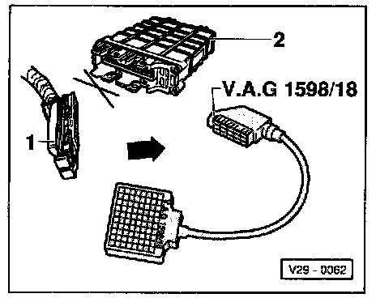
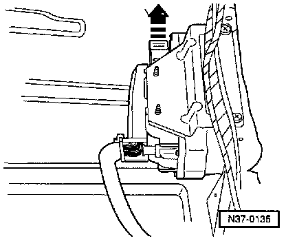
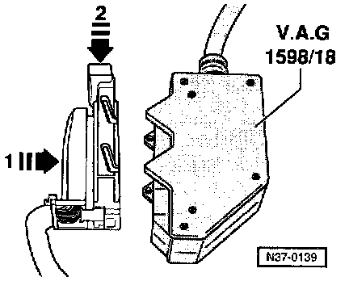

Pinout Values and Diagnostic Parameters
NOTES:- Use multimeter (Fluke 83 or equivalent) and VAG 1527B voltage tester for checks.
- The specifications given are valid for an ambient temperature from 0°C to + 40°C (32° to 104°F).
- If the measured values deviate from the specifications, determine malfunction using wiring diagram.
- If the measured values only deviate slightly from specifications, clean sockets and harness connectors on the tester and measuring cables, then repeat check. Before replacing components check wiring and connections. Particularly in cases of specifications less than 10 Ohm, repeat resistance measurement on component.
- To connect the testers to the test box use adapter cables from connector test kit VW 1594.
- The terminal numbers of the wiring harness connectors and socket numbers in the test box are identical.
- In addition to the checks described in the table, if necessary wiring must also be checked for short circuit to (-) Ground (GND) or battery positive voltage (B+).
- Battery voltage OK.
- Fuses 15, 18 and 22 OK.
- Ground (GND) connections on engine and transmission OK.
- Fuel pump and fuel pump relay OK.

- With ignition switched off disconnect connector -1- from Engine Control Module (ECM) -J220- -2-.
- Connect VAG 1598/18 test box to wiring harness connector.
- Connect VAG 1598/18 test box to automatic Transmission Control Module (TCM) -J217- connector.
TCM -J217- is located under rear seat.

- Release multi-pin connector in direction of (arrow) and disconnect control module.

- Install VAG 1598/18 test box onto multi-pin connector-1-and lock, in direction of (arrow -2-).
- Using VAG 1598/18 test box, check wiring according to wiring diagram.
After electrical tests:

- Install multi-pin connector on Transmission Control Module (TCM) -J217- and lock in place.
NOTE: When installing make sure that guides (arrows) are engaged on control module pins.